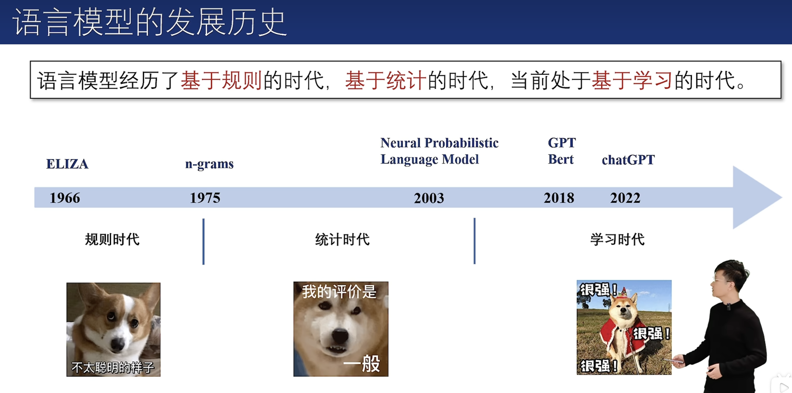
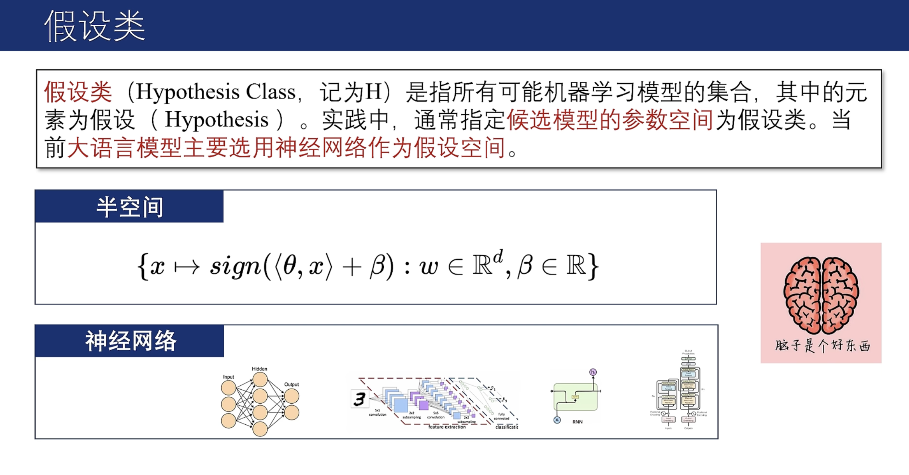
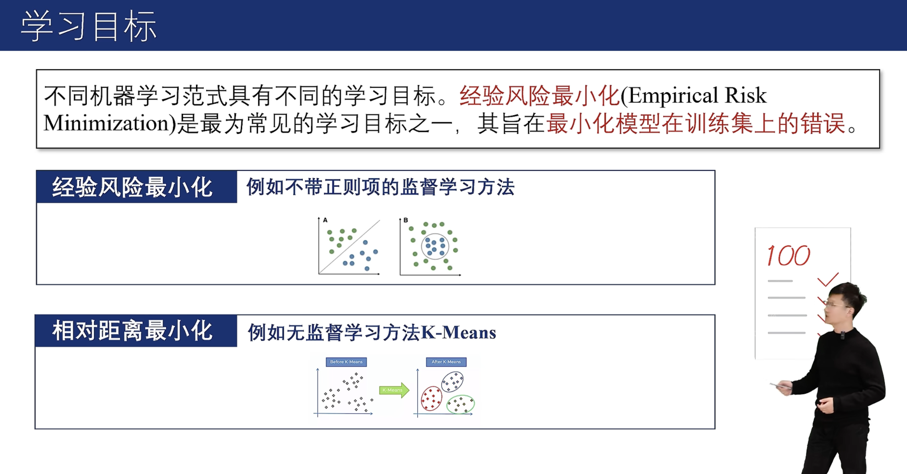
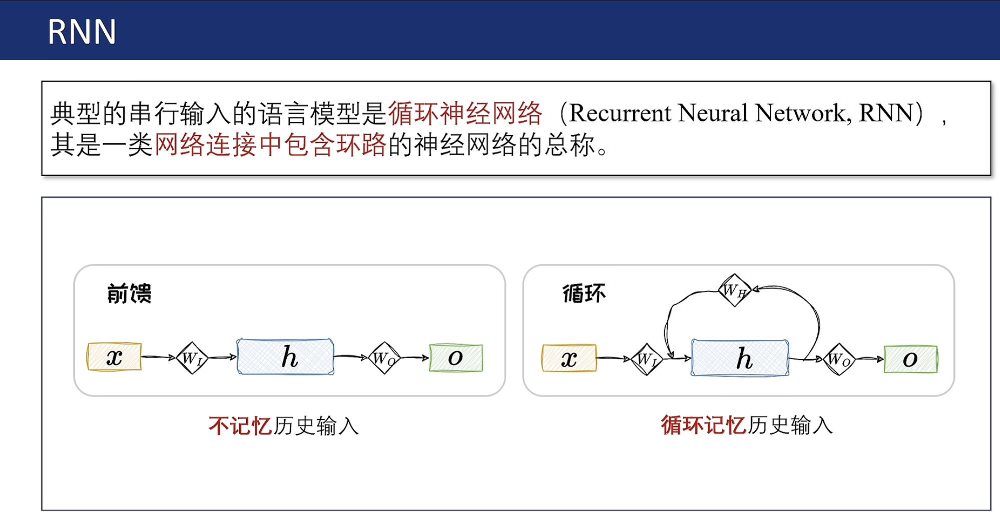
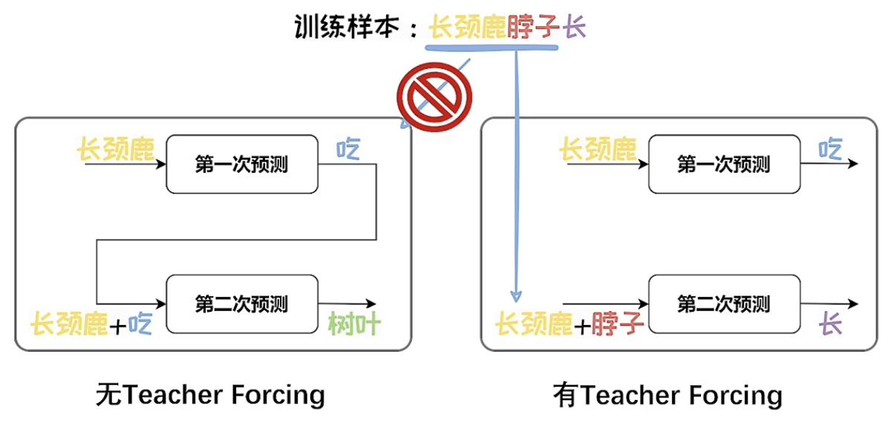
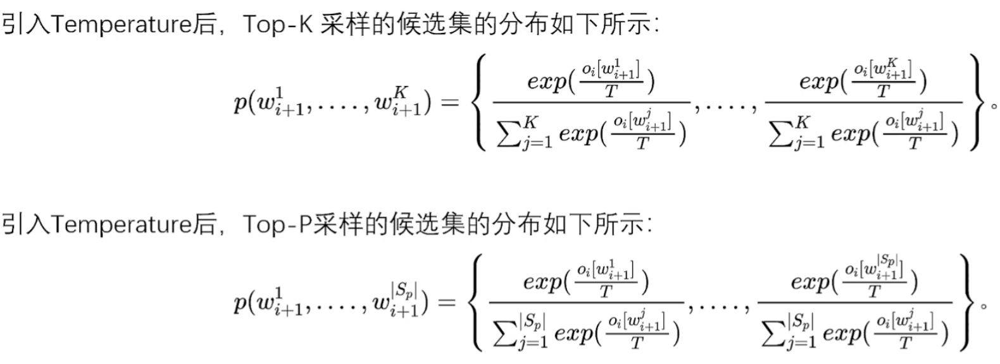
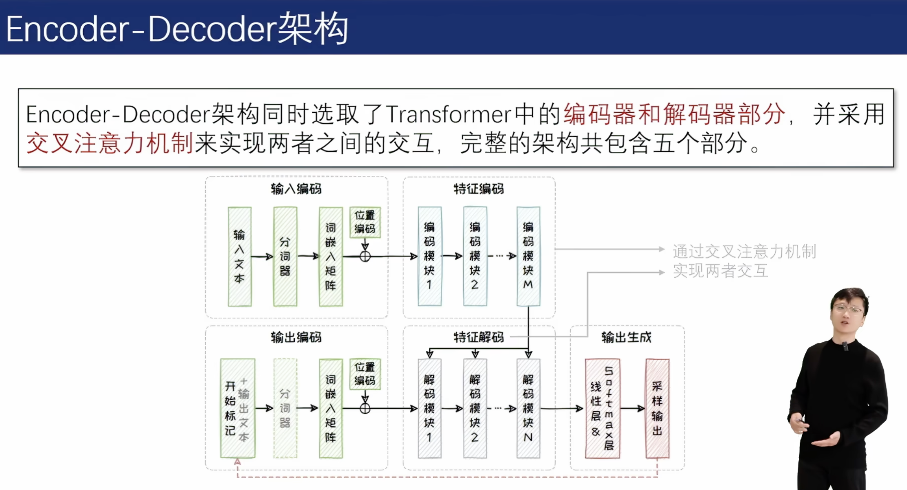
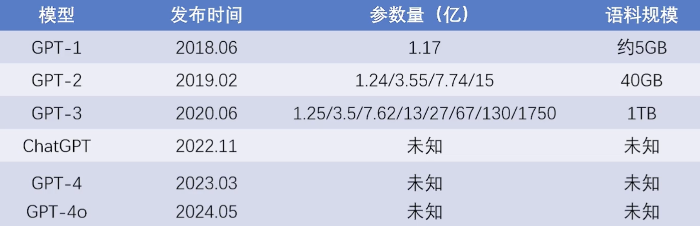
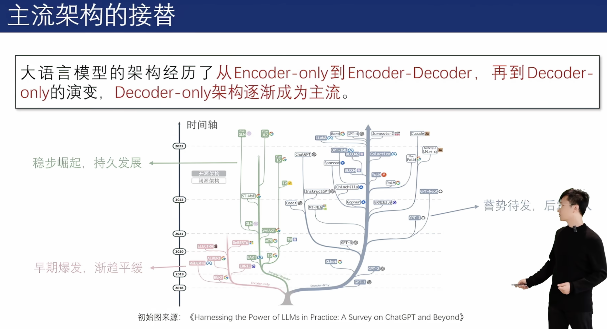

https://github.com/ZJU-LLMs/Foundations-of-LLMs
毛玉仁
第一章 语言模型基础
00 序言
语言之于智能：在认知层面，语言与智能紧密相连，语言是智能的载体。
如何建模语言：将语言建模为一系列词元（Token）组成的序列数据。其中，词元是不可再拆分的最小语义单位。
语言模型：语言模型旨在预测一个词元或词元序列出现的概率。现有语言模型通常基于规则、统计或学习来构建。
{我，为，什么，要，选，这，门，课} → 语言模型 → 0.66666
语言模型的概率预测与上下文和语料库息息相关。
上下文
{这，课，好，难，我，为，什么，要，选，这，门，课} → 语言模型 → 0.9
{这，课，好，简，单，我，为，什么，要，选，这，门，课} → 语言模型 → 0.2
语料库
普通话语料库：{我，为，什么，要，选，这，门，课} → 语言模型 → 0.6
四川话语料库：
{我，为，什么，要，选，这，门，课} → 语言模型 → 0.2
{我，为，啥子，要，选，这，门，课} → 语言模型 → 0.6
综合以上两点，我们可以用条件概率的链式法则对语言模型的概率进行建模。
条件概率链式法则
设词元序列为
n-阶马尔科夫假设
当前状态只与前面n个状态有关。
对序列

01 基于统计的语言模型
1.1 n-grams 语言模型
n-grams 语言模型中的n-gram 指的是长度为n 的词序列。n-grams 语言模型通过依次统计文本中的n-gram 及其对应的(n-1)-gram 在语料库中出现的相对频率来
计算文本
经典的n-grams语言模型，被工业界沿用至今。

n-grams语言模型中，n为变量，当n=1时，称之为unigram，其不考虑文本的上下文关系。当n=2时，称之为bigrams，其对前一个词进行考虑。当n=3时，称之为trigrams，其对前两个词进行考虑。以此类推。
bigrams的例子：

虽然“长颈鹿脖子长”并没有直接出现在语料库中，但是bigrams 语言模型仍可以预测出“长颈鹿脖子长”出现的概率有 2/15。由此可见，n-grams具备对未知文本的泛化能力。
1.2 n-grams中的n
n的选择会影响n-grams模型的泛化性能和计算复杂度。实际中n通常小于等于5。
泛化性：在n-grams 语言模型中，n 代表了拟合语料库的能力与对未知文本的泛化能力之间的权衡。当n 过大时，语料库中难以找到与n-gram 一模一样的词序列，可能出现大量“零概率”现象；在n 过小时，n-gram 难以承载足够的语言信息，不足以反应语料库的特性。
计算量：随着n的增大，n-gram模型的参数呈指数级增长。假设语料库中包含1000个词汇，则unigram的参数量为1000，而bigrams的参数量则为1000*1000。
n-grams中的统计学原理
n-grams语言模型是在n阶马尔可夫假设下，对语料库中出现的长度为n的词序列出现概率的极大似然估计。
1.3 n-grams语料及数据
n-gram的效果与语料库息息相关。Google在2005年开始Google Books Library Project项目，试图囊括自现代印刷术发明以来的全世界所有的书刊。其提供了unigram到5-gram的数据。
n-grams的应用
n-gram不仅在输入法、拼写纠错、机器翻译等任务上得到广泛应用。其还推动了Culturomics（文化组学）的诞生。
n-grams的缺点
n-gram因为观测长度有限，无法捕捉长程依赖。此外，其是逐字匹配的，不能很好地适应语言的复杂性。

02 基于学习的语言模型
2.0 学习与统计的区别
统计：设计模型，描摹已知。
学习：找到模型，预测未知。

2.1 机器学习的过程
机器学习的过程：在某种学习范式下，基于训练数据，利用学习算法，从受归纳偏置限制的假设类中选取可以达到学习目标的假设，该假设可以泛化到未知数据上。
假设类：

归纳偏置：

学习范式：
学习目标：

损失函数：

学习算法：
1阶优化：目前最常用的梯度下降。
0阶优化：对梯度进行模拟，用估计出来的梯度来对模型进行优化。

泛化误差：

泛化误差界的公式来自概率近似正确（PAC，Probably Approximately Correct）理论。
PAC Learning为机器学习提供了对机器学习方法进行定量分析的理论框架，可以为设计机器学习方法提供理论指导。
Leslie Valiant由该理论，获得2010年图灵奖。

2.2 机器学习的发展历程


03 RNN与Transformer
3.1 RNN
RNN 是一类网络连接中包含环路的神经网络的总称。

RNN 在串行输入的过程中，前面的元素会被循环编码成隐状态，并叠加到当前的输入上面。是在时间维度上嵌套的复合函数。
在训练RNN时，涉及大量的矩阵联乘操作，容易引发梯度衰减或梯度爆炸问题。
LSTM
为解决经典RNN的梯度衰减/爆炸问题，带有门控机制的LSTM被提出。
LSTM将经典RNN中的通过复合函数传递隐藏状态的方式，解耦为状态累加。隐藏状态通过遗忘门、输入门来实现合理的状态累加，通过输出门实现合理整合。
LSTM中采用遗忘门来适度忘记“往事”。
LSTM中采用输入门来对“新闻”进行选择性聆听。
将“往事”与“新闻”相加得到当前状态。
LSTM采用输出门，考虑“人情世故”，将当前状态适度输出。
GRU为降低LSTM的计算成本，GRU将遗忘门与输入门进行合并。
3.2 Transformer

左边是Encoder模块，右边是Decoder模块
典型的支持并行输入的模型是Transformer，其是一类基于注意力机制的模块化构建的神经网络结构。
两种主要模块
(1) 注意力模块
注意力模块负责对上下文进行通盘考虑。
注意力模块由自注意力层、残差连接和层正则化组成。

(2) 全连接前馈模块
全连接前馈模块占据了Transformer近三分之二的参数，掌管着Transformer模型的记忆。
注意力层

说白了是加权输出的机制，而权重是通过
加权平均：原值是
袁粒老师的比喻
—— 想在京东买一件女式的红色大衣
Q、K、V的解释： Q：输入的查询词：“女式”、“红色”、“大衣”；K：搜索引擎根据输入Q提供K（颜色、种类等），根据Q与K的相似程度匹配到最终搜索到的商品V。
层正则化与残差连接
层正则化用以加速神经网络训练过程并取得更好的泛化性能；引入残差连接可以有效解决梯度消失问题。
残差连接加在LN前叫pre-LN，加在LN后叫post-LN。不同的模型里，两种加法性能各有优劣。
自回归 vs. Teacher Forcing
自回归面临着错误级联放大和串行效率低两个主要问题。为了解决上述两个问题，Teacher Forcing在语言模型预训练过程中被广泛应用。

3.3 训练RNN/Transformer的过程

但Teacher Forcing的训练方式将导致曝光偏差（Exposure Bias）：训练模型的过程和模型在推理过程存在差异。其易导致模型幻觉问题。
04 语言模型采样与评测
4.1 语言模型的采样
语言模型每轮预测输出的是一个概率向量。我们需要根据概率值从词表中选出本轮输出的词元。选择词元的过程被称为采样。
两类主流的采样方法可以总结为
(1). 概率最大化方法
最大化
假设生成M个词元，概率最大化方法的搜索空间为
贪心搜索法
贪心搜索在每轮预测中都选择概率最大的词
波束搜索法
波束搜索在每轮预测中都先保留b个可能性最高的词，在结束搜索事，得到M个集合。找出最优组合使得联合概率最大。

但概率最大的文本通常是最为常见的文本。这些文本会略显平庸。用于生成代码还行。但在开放式文本生成中，贪心搜索和波束搜索都容易生成一些“废话文学”——重复且平庸的文本。
(2). 随机采样方法
在每轮预测时，其先选出一组可能性高的候选词，然后按照其概率分布进行随机采样。
Top-k采样方法
在每轮预测中都选取K个概率最高的词作为本轮的候选词集合。
缺点：受候选词分布的方差的影响，方差大时可能“胡言乱语”，方差小时，候选集不够丰富。
Top-P采样方法：
Top-P设定阈值p来对候选集进行选取。
Temperature机制
Top-K采样和Top-P采样的随机性由语言模型输出的概率决定，不可自由调整。但在不同场景中，我们对于随机性的要求可能不同。引入Temperature机制可以对解码随机性进行调节。

Temperature越高随机性越高。可以看到T无穷大时，会变成概率为
4.2 语言模型评测
（1）内在评测：测试文本通常由与预训练中所用的文本独立同分布的文本构成，不依赖于具体任务。
困惑度（Perplexity），
困惑度减小也意味着熵减，意味着模型“胡言乱语”的可能性降低。
（2）外在评测：测试文本通常包括该任务上的问题和对应的标准答案，其依赖于具体任务。
基于统计指标的评测
BLEU (BiLingual Evaluation Understudy)：计算n-gram匹配精度的一种指标
示例：“大语言模型”翻译成英文，生成的翻译为“big language models”，而参考文本为“large language models”。
当n=1时，
当n=2时，
当N=2时，
基于语言模型的评测
从语义理解的层面进行评测
基于上下文词嵌入：上下文词嵌入（Contextual Embeddings）向量的相似度。
基于生成模型：直接利用提示词工程引导LLM输出评测分数。属于无参评价。

4.3 语言模型的应用
直接应用
语言模型输出的概率值可以直接应用于输入法、机器翻译、对话等任务。
间接应用
语言模型中间产出的文本嵌入可以应用于实体识别、实体检测、文本检索等任务。
第二章 大语言模型架构
10 模型架构概览
涌现能力：实验发现新能力随着模型规模提升凭空自然涌现出来，因此将其称为涌现能力（Emergent Abilities），例如上下文学习、逻辑推理和常识推理等能力。
扩展法则：GPT系列模型的性能提升，有着一系列关于模型能力与参数/数据规模之间的定量关系作为理论支撑，即扩展法则（Scaling Law）。其中以OpenAI提出的Kaplan-McCandlish法则以及DeepMind提出的Chinchilla法则最为著名。
模型基础：Transformer灵活的并行架构为训练数据和参数的扩展提供了模型基础，推动了本轮大语言模型的法则。
Note
如上一章所述Transformer是模块化的模型
1.1 基于Transformer的三种架构
在Transformer的基础上衍生出了三种主流模型架构。
Tip
纯 Encoder 模型（例如 BERT），又称自编码 (auto-encoding) Transformer 模型；
纯 Decoder 模型（例如 GPT），又称自回归 (auto-regressive) Transformer 模型；
Encoder-Decoder 模型（例如 BART、T5），又称 Seq2Seq (sequence-to-sequence) Transformer 模型。
Encoder-only架构
只选用Transformer中的Encoder部分，代表模型为BERT系列。

Encoder-Decoder架构
同时选用Transformer中的Encoder和Decoder部分，代表模型为T5、BART等。

Decoder-only架构
只选用Transformer中的Decoder部分，代表模型为GPT和LLaMA系列。

1.1（加餐-理论）
https://transformers.run/c1/transformer/
标准的 Transformer 模型主要由两个模块构成：
Encoder（左边）：负责理解输入文本，为每个输入构造对应的语义表示（语义特征）；
Decoder（右边）：负责生成输出，使用 Encoder 输出的语义表示结合其他输入来生成目标序列。
这两个模块可以根据任务的需求而单独使用：
纯 Encoder 模型：适用于只需要理解输入语义的任务，例如句子分类、命名实体识别；
纯 Decoder 模型：适用于生成式任务，例如文本生成；
Encoder-Decoder 模型或 Seq2Seq 模型：适用于需要基于输入的生成式任务，例如翻译、摘要。
原始结构
Transformer 模型本来是为了翻译任务而设计的。在训练过程中，Encoder 接受源语言的句子作为输入，而 Decoder 则接受目标语言的翻译作为输入。在 Encoder 中，由于翻译一个词语需要依赖于上下文，因此注意力层可以访问句子中的所有词语；而 Decoder 是顺序地进行解码，在生成每个词语时，注意力层只能访问前面已经生成的单词。
例如，假设翻译模型当前已经预测出了三个词语，我们会把这三个词语作为输入送入 Decoder，然后 Decoder 结合 Encoder 所有的源语言输入来预测第四个词语。
实际训练中为了加快速度，会将整个目标序列都送入 Decoder，然后在注意力层中通过 Mask 遮盖掉未来的词语来防止信息泄露。例如我们在预测第三个词语时，应该只能访问到已生成的前两个词语，如果 Decoder 能够访问到序列中的第三个（甚至后面的）词语，就相当于作弊了。
其中，Decoder 中的第一个注意力层关注 Decoder 过去所有的输入，而第二个注意力层则是使用 Encoder 的输出，因此 Decoder 可以基于整个输入句子来预测当前词语。这对于翻译任务非常有用，因为同一句话在不同语言下的词语顺序可能并不一致（不能逐词翻译），所以出现在源语言句子后部的词语反而可能对目标语言句子前部词语的预测非常重要。
在 Encoder/Decoder 的注意力层中，我们还会使用 Attention Mask 遮盖掉某些词语来防止模型关注它们，例如为了将数据处理为相同长度而向序列中添加的填充 (padding) 字符。
Transformer家族

Encoder 分支
纯 Encoder 模型只使用 Transformer 模型中的 Encoder 模块，也被称为自编码 (auto-encoding) 模型。在每个阶段，注意力层都可以访问到原始输入句子中的所有词语，即具有“双向 (Bi-directional)”注意力。
纯 Encoder 模型通常通过破坏给定的句子（例如随机遮盖其中的词语），然后让模型进行重构来进行预训练，最适合处理那些需要理解整个句子语义的任务，例如句子分类、命名实体识别（词语分类）、抽取式问答。
BERT 是第一个基于 Transformer 结构的纯 Encoder 模型。
Decoder 分支
纯 Decoder 模型只使用 Transformer 模型中的 Decoder 模块。在每个阶段，对于给定的词语，注意力层只能访问句子中位于它之前的词语，即只能迭代地基于已经生成的词语来逐个预测后面的词语，因此也被称为自回归 (auto-regressive) 模型。
纯 Decoder 模型的预训练通常围绕着预测句子中下一个单词展开。纯 Decoder 模型适合处理那些只涉及文本生成的任务。
对 Transformer Decoder 模型的探索在在很大程度上是由 OpenAI 带头进行的。
Encoder-Decoder 分支
Encoder-Decoder 模型（又称 Seq2Seq 模型）同时使用 Transformer 架构的两个模块。在每个阶段，Encoder 的注意力层都可以访问初始输入句子中的所有单词，而 Decoder 的注意力层则只能访问输入中给定词语之前的词语（即已经解码生成的词语）。
Encoder-Decoder 模型可以使用 Encoder 或 Decoder 模型的目标来完成预训练，但通常会包含一些更复杂的任务。例如，T5 通过随机遮盖掉输入中的文本片段进行预训练，训练目标则是预测出被遮盖掉的文本。Encoder-Decoder 模型适合处理那些需要根据给定输入来生成新文本的任务，例如自动摘要、翻译、生成式问答。
1.2 三种架构对比

10'（加餐-实践）
10.1 Attention
Scaled Dot-product Attention

形式化表示为：
xxxxxxxxxx421'''2手工实现 Scaled Dot-product Attention3'''4
5# 文本分词, 并转换为词向量：6from torch import nn7from transformers import AutoConfig8from transformers import AutoTokenizer9
10model_ckpt = "bert-base-uncased"11tokenizer = AutoTokenizer.from_pretrained(model_ckpt)12
13text = "I really like eating McDonald"14inputs = tokenizer(text, return_tensors="pt", add_special_tokens=False)15print(inputs.keys())16print(inputs.input_ids)17
18config = AutoConfig.from_pretrained(model_ckpt)19token_emb = nn.Embedding(config.vocab_size, config.hidden_size)20print(token_emb)21
22inputs_embeds = token_emb(inputs.input_ids)23print(inputs_embeds.size())24
25# 创建 query、key、value 向量序列, 并且使用点积作为相似度函数来计算注意力分数：26import torch27from math import sqrt28
29Q = K = V = inputs_embeds # Self-Attention30dim_k = K.size(-1)31scores = torch.bmm(Q, K.transpose(1,2)) / sqrt(dim_k)32print(scores.size())33
34# 这里Q、K的序列长度都为5，因此生成了一个5x5的注意力分数矩阵，接下来就是应用 Softmax 标准化注意力权重：35import torch.nn.functional as F36
37weights = F.softmax(scores, dim=-1)38print(weights.sum(dim=-1))39
40# 最后将注意力权重与V序列相乘：41attn_outputs = torch.bmm(weights, V)42print(attn_outputs.shape)打印输出：
xxxxxxxxxx91dict_keys(['input_ids', 'token_type_ids', 'attention_mask'])2tensor([[1045, 2428, 2066, 5983, 9383]])3Embedding(30522, 768)4torch.Size([1, 5, 768])5
6torch.Size([1, 5, 5])7
8tensor([[1., 1., 1., 1., 1.]], grad_fn=<SumBackward1>)9torch.Size([1, 5, 768])xxxxxxxxxx131'''2至此实现了一个简化版的 Scaled Dot-product Attention。可以将上面这些操作封装为函数3'''4def scaled_dot_product_attention(query, key, value, query_mask=None, key_mask=None, mask=None):5 dim_k = query.size(-1)6 scores = torch.bmm(query, key.transpose(1, 2)) / sqrt(dim_k)7 if query_mask is not None and key_mask is not None:8 mask = torch.bmm(query_mask.unsqueeze(-1), key_mask.unsqueeze(1))9 if mask is not None:10 # Fills elements of self tensor with value where mask is True11 scores = scores.masked_fill(mask == 0, -float("inf"))12 weights = F.softmax(scores, dim=-1)13 return torch.bmm(weights, value)[!NOTE]
上面的代码还考虑了
序列的 Mask。填充 (padding) 字符不应该参与计算，因此将对应的注意力分数设置为 −∞，这样 softmax 之后其对应的注意力权重就为 0 了（e−∞=0）。
注意！上面的做法会带来一个问题：当 Q 和 K 序列相同时，注意力机制会为上下文中的相同单词分配非常大的分数（点积为 1），而在实践中，相关词往往比相同词更重要。例如对于上面的例子，只有关注“eating”才能够确认“McDonald”的含义。
因此，多头注意力 (Multi-head Attention) 出现了！
Multi-head Attention
多头注意力首先通过线性映射将

每个注意力头负责关注某一方面的语义相似性，多个头就可以让模型同时关注多个方面。因此与简单的 Scaled Dot-product Attention 相比，Multi-head Attention 可以捕获到更加复杂的特征信息。
形式化表示为：
其中
xxxxxxxxxx161'''2下面我们首先实现一个注意力头：3'''4from torch import nn5
6class AttentionHead(nn.Module):7 def __init__(self, embed_dim, head_dim):8 super().__init__()9 self.q = nn.Linear(embed_dim, head_dim)10 self.k = nn.Linear(embed_dim, head_dim)11 self.v = nn.Linear(embed_dim, head_dim)12
13 def forward(self, query, key, value, query_mask=None, key_mask=None, mask=None):14 attn_outputs = scaled_dot_product_attention(15 self.q(query), self.k(key), self.v(value), query_mask, key_mask, mask)16 return attn_outputs每个头都会初始化三个独立的线性层，负责将 Q,K,V 序列映射到尺寸为 [batch_size, seq_len, head_dim] 的张量，其中 head_dim 是映射到的向量维度。
Note
实践中一般将 head_dim 设置为 embed_dim 的因数，这样 token 嵌入式表示的维度就可以保持不变，例如 BERT 有 12 个注意力头，因此每个头的维度被设置为 768/12=64。
最后只需要拼接多个注意力头的输出就可以构建出 Multi-head Attention 层了（这里在拼接后还通过一个线性变换来生成最终的输出张量）：
xxxxxxxxxx171class MultiHeadAttention(nn.Module):2 def __init__(self, config):3 super().__init__()4 embed_dim = config.hidden_size5 num_heads = config.num_attention_heads6 head_dim = embed_dim // num_heads7 self.heads = nn.ModuleList(8 [AttentionHead(embed_dim, head_dim) for _ in range(num_heads)]9 )10 self.output_linear = nn.Linear(embed_dim, embed_dim)11
12 def forward(self, query, key, value, query_mask=None, key_mask=None, mask=None):13 x = torch.cat([14 h(query, key, value, query_mask, key_mask, mask) for h in self.heads15 ], dim=-1)16 x = self.output_linear(x)17 return x这里使用 BERT-base-uncased 模型的参数初始化 Multi-head Attention 层，并且将之前构建的输入送入模型以验证是否工作正常：
xxxxxxxxxx161from transformers import AutoConfig2from transformers import AutoTokenizer3
4model_ckpt = "bert-base-uncased"5tokenizer = AutoTokenizer.from_pretrained(model_ckpt)6
7text = "time flies like an arrow"8inputs = tokenizer(text, return_tensors="pt", add_special_tokens=False)9config = AutoConfig.from_pretrained(model_ckpt)10token_emb = nn.Embedding(config.vocab_size, config.hidden_size)11inputs_embeds = token_emb(inputs.input_ids)12
13multihead_attn = MultiHeadAttention(config)14query = key = value = inputs_embeds15attn_output = multihead_attn(query, key, value)16print(attn_output.size())10.2 Transformer Encoder
回忆一下上一章中介绍过的标准 Transformer 结构，Encoder 负责将输入的词语序列转换为词向量序列，Decoder 则基于 Encoder 的隐状态来迭代地生成词语序列作为输出，每次生成一个词语。
其中，Encoder 和 Decoder 都各自包含有多个 building blocks。下图展示了一个翻译任务的例子：

可以看到：
输入的词语首先被转换为词向量。由于注意力机制无法捕获词语之间的位置关系，因此还通过 positional embeddings 向输入中添加位置信息；
Encoder 由一堆 encoder layers (blocks) 组成，类似于图像领域中的堆叠卷积层。同样地，在 Decoder 中也包含有堆叠的 decoder layers；
Encoder 的输出被送入到 Decoder 层中以预测概率最大的下一个词，然后当前的词语序列又被送回到 Decoder 中以继续生成下一个词，重复直至出现序列结束符 EOS 或者超过最大输出长度。
The Feed-Forward Layer
Transformer Encoder/Decoder 中的前馈子层实际上就是两层全连接神经网络，它单独地处理序列中的每一个词向量，也被称为 position-wise feed-forward layer。常见做法是让第一层的维度是词向量大小的 4 倍，然后以 GELU 作为激活函数。
x
1class FeedForward(nn.Module):2 def __init__(self, config):3 super().__init__()4 self.linear_1 = nn.Linear(config.hidden_size, config.intermediate_size)5 self.linear_2 = nn.Linear(config.intermediate_size, config.hidden_size)6 self.gelu = nn.GELU()7 self.dropout = nn.Dropout(config.hidden_dropout_prob)8
9 def forward(self, x):10 x = self.linear_1(x)11 x = self.gelu(x)12 x = self.linear_2(x)13 x = self.dropout(x)14 return x将前面注意力层的输出送入到该层中以测试是否符合我们的预期：
31feed_forward = FeedForward(config)2ff_outputs = feed_forward(attn_output)3print(ff_outputs.size())至此创建完整 Transformer Encoder 的所有要素都已齐备，只需要再加上 Skip Connections 和 Layer Normalization 就大功告成了。
Layer Normalization
Layer Normalization 负责将一批 (batch) 输入中的每一个都标准化为均值为零且具有单位方差；Skip Connections 则是将张量直接传递给模型的下一层而不进行处理，并将其添加到处理后的张量中。
向 Transformer Encoder/Decoder 中添加 Layer Normalization 目前共有两种做法：

Post layer normalization：Transformer 论文中使用的方式，将 Layer normalization 放在 Skip Connections 之间。 但是因为梯度可能会发散，这种做法很难训练，还需要结合学习率预热 (learning rate warm-up) 等技巧；
Pre layer normalization：目前主流的做法，将 Layer Normalization 放置于 Skip Connections 的范围内。这种做法通常训练过程会更加稳定，并且不需要任何学习率预热。
本章采用第二种方式来构建 Transformer Encoder 层：
x
1class TransformerEncoderLayer(nn.Module):2 def __init__(self, config):3 super().__init__()4 self.layer_norm_1 = nn.LayerNorm(config.hidden_size)5 self.layer_norm_2 = nn.LayerNorm(config.hidden_size)6 self.attention = MultiHeadAttention(config)7 self.feed_forward = FeedForward(config)8
9 def forward(self, x, mask=None):10 # Apply layer normalization and then copy input into query, key, value11 hidden_state = self.layer_norm_1(x)12 # Apply attention with a skip connection13 x = x + self.attention(hidden_state, hidden_state, hidden_state, mask=mask)14 # Apply feed-forward layer with a skip connection15 x = x + self.feed_forward(self.layer_norm_2(x))16 return x同样地，这里将之前构建的输入送入到该层中进行测试：
31encoder_layer = TransformerEncoderLayer(config)2print(inputs_embeds.shape)3print(encoder_layer(inputs_embeds).size())结果符合预期！至此，本章就构建出了一个几乎完整的 Transformer Encoder 层。
Positional Embeddings
前面讲过，由于注意力机制无法捕获词语之间的位置信息，因此 Transformer 模型还使用 Positional Embeddings 添加了词语的位置信息。
Positional Embeddings 基于一个简单但有效的想法：使用与位置相关的值模式来增强词向量。
如果预训练数据集足够大，那么最简单的方法就是让模型自动学习位置嵌入。code
绝对位置表示：使用由调制的正弦和余弦信号组成的静态模式来编码位置。 当没有大量训练数据可用时，这种方法尤其有效；
相对位置表示：在生成某个词语的词向量时，一般距离它近的词语更为重要，因此也有工作采用相对位置编码。
下面将所有这些层结合起来构建完整的 Transformer Encoder：
xxxxxxxxxx121class TransformerEncoder(nn.Module):2 def __init__(self, config):3 super().__init__()4 self.embeddings = Embeddings(config)5 self.layers = nn.ModuleList([TransformerEncoderLayer(config)6 for _ in range(config.num_hidden_layers)])7
8 def forward(self, x, mask=None):9 x = self.embeddings(x)10 for layer in self.layers:11 x = layer(x, mask=mask)12 return x10.3 Transformer Decoder
Transformer Decoder 与 Encoder 最大的不同在于 Decoder 有两个注意力子层。
Masked multi-head self-attention layer（自注意力模块）：确保在每个时间步生成的词语仅基于过去的输出和当前预测的词，否则 Decoder 相当于作弊了；
Encoder-decoder attention layer（交叉注意力模块）：以解码器的中间表示作为 queries，对 encoder stack 的输出 key 和 value 向量执行 Multi-head Attention。通过这种方式，Encoder-Decoder Attention Layer 就可以学习到如何关联来自两个不同序列的词语，例如两种不同的语言。 解码器可以访问每个 block 中 Encoder 的 keys 和 values。
与 Encoder 中的 Mask 不同，Decoder 的 Mask 是一个下三角矩阵：
31seq_len = inputs.input_ids.size(-1)2mask = torch.tril(torch.ones(seq_len, seq_len)).unsqueeze(0)3print(mask[0])51tensor([[1., 0., 0., 0., 0.],2 [1., 1., 0., 0., 0.],3 [1., 1., 1., 0., 0.],4 [1., 1., 1., 1., 0.],5 [1., 1., 1., 1., 1.]])这里使用 PyTorch 自带的 tril() 函数来创建下三角矩阵，然后同样地，通过 Tensor.masked_fill() 将所有零替换为负无穷大来防止注意力头看到未来的词语而造成信息泄露：
11scores.masked_fill(mask == 0, -float("inf"))本章对 Decoder 只做简单的介绍，如果你想更深入的了解可以参考 Andrej Karpathy 实现的 minGPT。
Tip
本章的所有代码已经整理于 Github： https://gist.github.com/jsksxs360/3ae3b176352fa78a4fca39fff0ffe648
由于各自独特的模型设计以及注意力矩阵上的差异，在同等参数规模下，这三种架构的模型在适用任务上也都各有倾向。
11 基于Encoder-only架构的大语言模型
Encoder-only架构中的双向注意力机制允许模型充分考虑序列中的前后文信息，捕捉丰富的语义和依赖关系。但由于缺少解码器组件，无法直接输出序列。
适合：判别任务，如情感识别。
12 基于Encoder-Decoder架构的大语言模型
Encoder-Decoder架构通过添加解码器来基于编码器输出的上下文表示逐步生成输出序列。但解码器的加入也造成的训练和推理成本的增加。
适合：既适合判别任务，也适合生成任务。但计算量大幅提升，不利于参数扩展。
Encoder-Decoder架构主要包含编码器和解码器两部分：


13 基于Decoder-only架构的大语言模型
大规模预训练数据的加持使得Decoder-only架构的模型能够生成高质量、连贯的文本。但是缺乏编码器提供的双向上下文信息，这一架构在理解复杂输入数据时存在一定局限性。
适合：生成任务，如对话问答。

Decoder-only架构去除了Transformer中的编码器部分，其简单的架构设计和强大的可扩展性，使得Decoder-only架构被广泛应用于大规模语言模型。
不仅去除了编码器，由此解码器中也不需要交叉注意力模块了。
CloseAI的GPT闭源，Meta的LLaMA开源。
GPT系列：
GPT-1：《Improving Language Understanding by Generative Pre-Training》
GPT-2：《Language Models are Unsupervised Multitask Learners》
GPT-3：《Language Models are Few-Shot Learners》，GPT-3涌现出良好的上下文学习（In-Context Learning, ICL）能力。
GPT-3的一系列衍生模型，其中最具启发意义的是有良好指令跟随能力的InstructGPT模型：《Training language models to follow instructions with human feedback》
往后就闭源了。
ChatGPT（GPT-3.5）：标志着一种新的服务模式LLMaaS（LLM as a Service）的出现。GPT模型也开始走向闭源。
GPT-4：更好理解复杂语境、生成连贯文本。还引入对图文双模态的支持。
GPT-4o：继续提升模型性能和用户体验。比GPT4便宜很多，但成本、响应速度、延迟、多模态处理和多语言支持能力都比较好。

LLaMA系列：
推动力大语言模型的“共创”。
GPT系列的升级主线聚焦于模型规模与预训练预料的同步提升（KM法则），而LLaMA则在模型规模上保持相对稳定，更专注于提升预训练数据的规模与质量（Chinchilla法则）。
